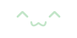
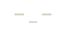
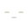
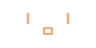
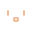

NeedleBub assets
Design A · Open expression
Reference board ↗
Appearance
Light
Dark
Editable SVG board
Expressions

Ready
96 × 48
32 × 32


Paused
96 × 48
32 × 32


Needs attention
96 × 48
32 × 32
Controls
Activity
Sources
Pause
Resume
Reconnect
In the app
State
Ready
Paused
Access off
No sources